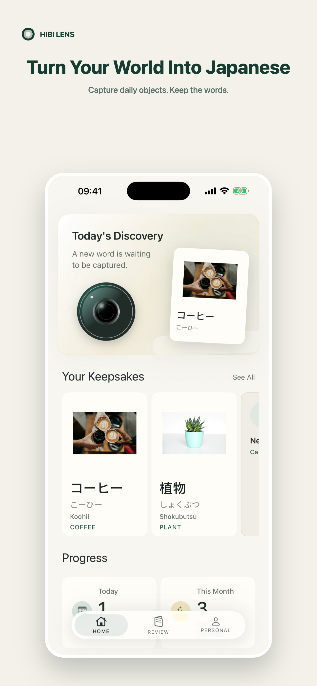
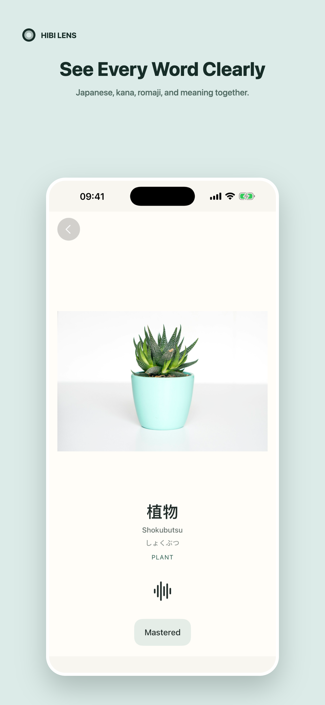
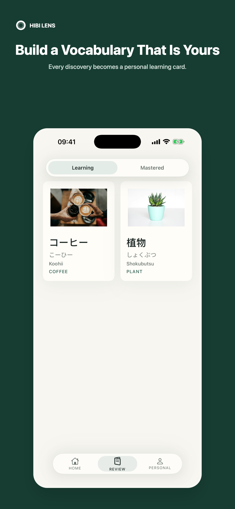

A Japanese language camera
See it. Know it in Japanese.
Photograph the things around you and turn them into Japanese vocabulary cards you can keep, hear, and review.
Available for iPhone · No account required

-
See
Notice an everyday object
-
Capture
Make it a Japanese card
-
Remember
Build your own collection
Notice & Capture
Start with something right in front of you.
Take a photo or choose one from your library. Hibi Lens recognizes an everyday object and finds the Japanese word for it.
Understand
Everything you need to know the word.
See the Japanese term, kana, romaji, meaning, and pronunciation together—clear enough to understand at a glance.

Keep & Review
Build a vocabulary collection that is yours.
Every discovery becomes a card you can keep, review, and move from learning to mastered.

Private by design
Your discoveries stay with you.
Recognition happens on your device. Your photos, vocabulary cards, and learning progress stay there too. Hibi Lens does not require an account.
- On-device recognition
- No sign-up
- No photo uploads
Start with what you see today
See it. Know it in Japanese.
Turn the world around you into a Japanese vocabulary collection that is entirely your own.